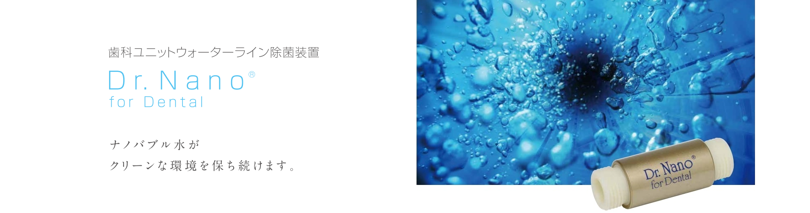

クリニック案内
当院へのアクセス
住所：札幌市豊平区平岸３条１４丁目３−３
紅桜観光ビル３階
電話：011-827-9901
当クリニックはビルの３階にございますが、エレベーターがないので、階段の上り下りが大変な患者様は階段に設置してある昇降機をお使いください。
院内紹介


白を基調とした清潔感のある空間で、リラックスできる雰囲気を大切にしています。
レントゲンについて
レントゲンはセファロ(頭部X線規格写真)、CT、パノラマ複合レントゲン装置。ワンショット撮影で短時間の撮影が可能です。
当院で使用する水について

当院では、歯科ユニットの給水管内に形成される「バイオフィルム」汚染を防ぐため、 各ユニットに Dr.Nano for Dental を設置しています。
ナノバブルでユニット内に残る細菌の膜を洗浄し、最高レベルの衛生環境を維持する 最先端のテクノロジーです。化学薬品を使用していないため、人体や環境にも 安全な処置水です。